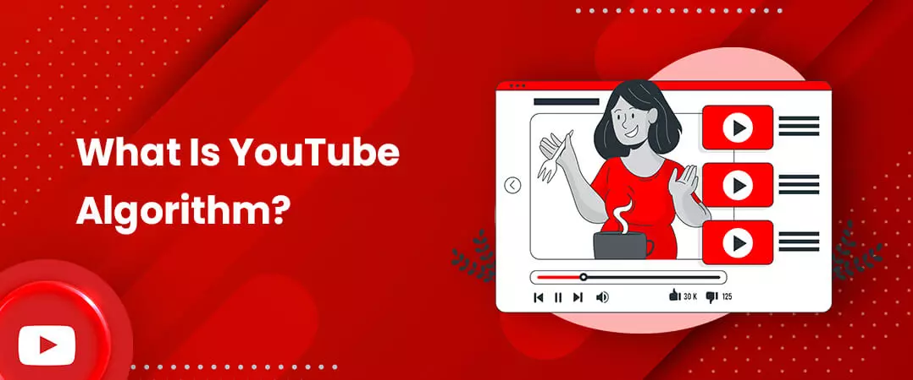
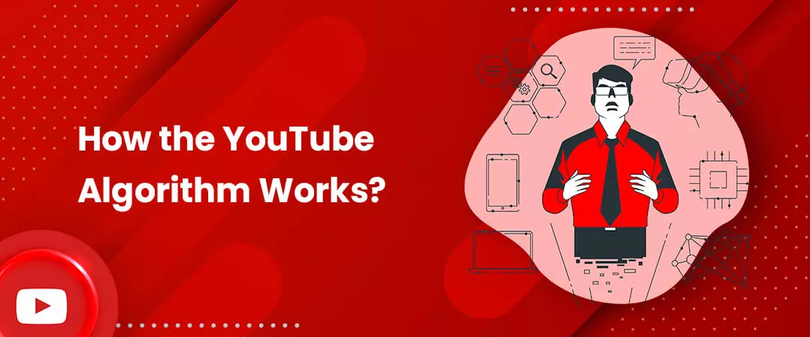
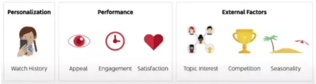
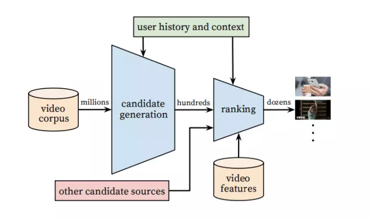
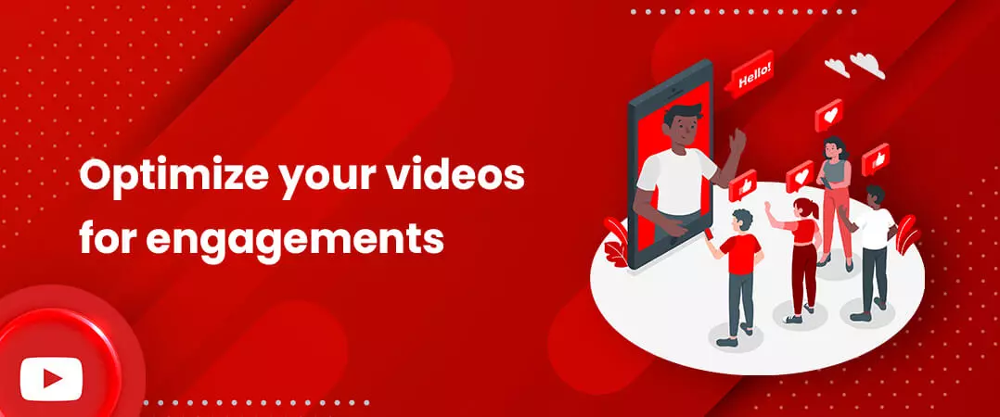
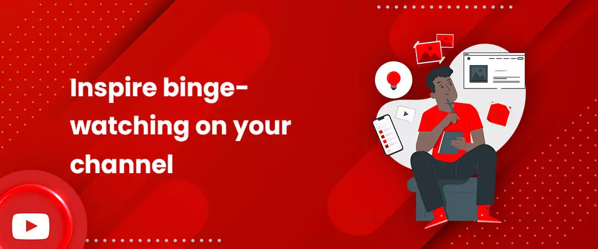
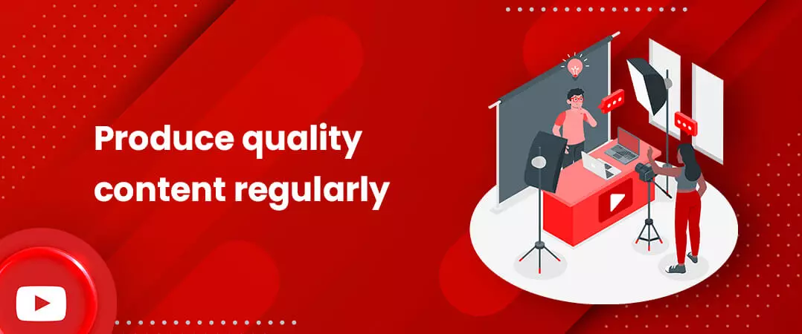
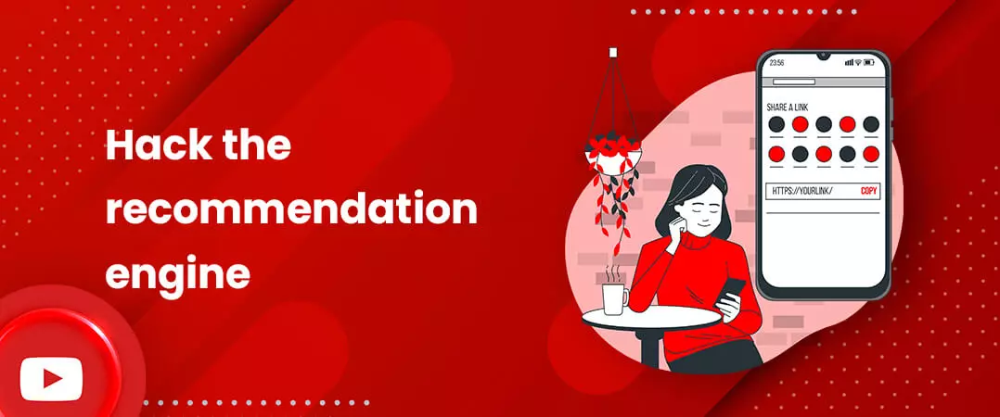

It’s an unpretentious question that can make all the dissimilarity for video content creators: how YouTube algorithm works in 2021? Knowing the answer can make the difference between going viral and remaining imperceptible. YouTube represents one of the leading scale and most refined industrial recommendation systems in existence. Its recommendations are accountable for serving more than 2 billion users discover personalized content from an ever-growing corpus of videos. It has undergone a fundamental paradigm transference towards using deep learning as a broad-spectrum resolution for approximately all learning glitches.
Since marketers are at the mercy of algorithms on almost every publishing channel, knowing how to beat the YouTube algorithm in 2021 is crucial to attracting and sustaining an audience. The algorithm has changed over the years to reward viewer satisfaction over total clicks and views.
Many YouTubers, celebrities and influencers also buy YouTube subscribers to increase their rankings with the algorithm, which is based on straightforward process with an arrangement of accurately measured statistics to each and every single account on the platform.
Contents
- 1. What Is YouTube Algorithm?
- 2. How the YouTube Algorithm Works?
- 3. Search
- 4. Suggested Videos
- 5. 2005 - 2012: Views
- 6. 2016: “Deep Learning” for Recommendations
- 7. 2017 - 2020: Removal of “Borderline Content”
- 8. Optimize your videos for engagements
- 9. Inspire binge-watching on your channel
- 10. Produce quality content regularly
- 11. Hack the recommendation engine
What Is YouTube Algorithm?

It is an algorithm that YT practices to determine the video content to represent in search results. It is a loop of accumulating data and recommending videos to users. It collects data from viewers and channels to learn who will watch, like, share and skip, which types of content. 84% of people have been persuaded to buy a product or service by a brand’s video and a recent survey found that 93% of marketers presently using video consider it “an important part of their marketing strategy”. As the algorithm helps to place videos on the platform for people to view and click, it has become indispensable for the creators to know, how to beat the YouTube algorithm 2021.
More than one-third of consumers have procured products they discovered on the platform.
With the up-to-date algorithm, it aims to achieve a two-fold objective:
- Facilitating users reach videos they desire to watch
- Inspiring prolonged viewer engagement & contentment
It does this by making it easy for individuals to find an interminable supply of content they will love.
In fact, it launched a course for creators about getting discovered, walking them through the essential niceties of snowballing their prominence on the platform.
Logically, we took the course to help you understand accurately how to boost your rankings on the video platform.
Read on to learn what we revealed and how you can grow your audience on the podium.
How the YouTube Algorithm Works?

The algorithm is grounded on a users’ search and view history. Let’s say you start watching content about mobiles. After a while, the system will start suggesting related videos to you. The algorithm regulates what a video is about by means of its metadata: keywords in a video title, a description, and a thumbnail.
After analysing metadata, it examines viewers’ engagement; how much time a user spent watching a video and whether they liked or commented on it, as YouTube’s priority is to make users’ time on the platform truly entertaining and beneficial.
In the United States, for instance, according to Statista, the number of YouTube viewers has risen to 205.9 in 2021. To keep addressees up to date, attract new subscribers, and get more comments & likes you have to publish quality content that resonates with your target audience.
To decipher which videos and channels users are most expected to enjoy watching, the platform “tracks” their audience, which means they examine their users’ engagement with each video they watch.
More unambiguously, they pay attention to:
- which videos each user watches and doesn’t watch?
- how much time they spend viewing each video?
- which videos they like and dislike,
- and which videos they’re not engrossed in grounded on the user’s feedback.
Meanwhile their algorithm plunders engagement instead of vanity metrics like views and clicks, it uses different signals and metrics to rank and recommend videos on each section of their platform. To figure out which content and channels users are most likely to enjoy watching, the podium “follows” their audience, which means they track their users’ engagement with each video they watch. More specifically, they pay attention to which videos each user watches and doesn’t watch, how much time they spend watching each video, which ones they like and dislike, and which one they’re not interested in established on the user’s feedback.
Which ranking signals does YouTube use to resolve which videos to show to public?
For each traffic source is marginally different. But eventually, what affects your video’s view count is an assortment of:
- personalization (the viewer’s history and likings)
- performance (the video’s achievement)
- external factors (the complete audience or target market)

Since the system rewards engagement instead of vanity metrics like views and clicks, the platform incentivizes creators to produce content that their audience actually enjoys watching.
But algorithm also uses different signals and metrics to rank and recommend videos on each section of their platform. That being said, let's go over how it serves content via YouTube's six key user categories: Search, Home, Suggested Videos, Trending, Subscriptions, and Notifications.
Search
The principal influences that affect your videos’ search rankings are keyword relevance and engagement metrics . When ranking videos in search, the second most trafficked website and the second largest search engine in the world , will ponder how well your titles, descriptions, thumbnails and content match each user’s queries. They’ll also ponder how many videos users have watched from your channel and the last time they surveyed other content adjoining the similar topic as your video. Even though the user’s history is significant, YouTube also stares at “which videos have driven the most engagement for a query.” The Search section also offers sponsored ads related to the query. YouTube algorithm ranks a video in search pages on three main factors: relevance, engagement, and quality.
1. Relevance-
To target relevance, the system investigates the right combination of title, description, tags, and content with a customized search query.
2. Engagement-
Engagement masses the number of likes, comments and shares from users, including watch time, session time, and regularity.
Quality-
A 1080p or 720p video is ranked higher than a 360p or 480p one by recommendation system. The quality metric is based on a channel’s ability to establish trustable authority.
In addition to these three metrics, the process relies on a user’s past views and a video-specific allocated score, a channel that has originality, innovation and regularity with uploads, among other qualities. This amalgamation of statistics allows the system to recommend videos that intersects viewer’s demand, interests, and preference.
Home
When manipulators entree the home page, they first see videos from their subscriptions, then suggested videos based on their earlier watch history and the videos’ performance. While you may be tempted to try to snag a coveted spot on the page, the platform encourages creators to simply create good content that people want to watch and click on.
According to Creator Academy, over 200 million dissimilar videos appear on users’ feed every day.
Which videos will appear on your “Home” feed depends on four factors:
- How fine the video has performed in terms of engagement with analogous audiences
- Onlooker’s watch and search history
- What channels they watch in the past?
- How much time they spend on the platform?
Suggested Videos
The system comes with a set of videos, customized for each viewer, showing up under the “Up Next” caption. According to Pew Research Centre, 81% users intermittently watch content recommended by the algorithm, while 15% users say that they do so quite habitually.
The videos in the Suggested window are suggested grounded on these elements:
- Videos that are topically associated, could be from the similar or a different channel
- Onlooker’s watch history
- How well any video has gratified similar target market
- How users have engaged with parallel videos
- How frequently the viewer watches videos of that specific channel
YouTube says that in 2021, homepage and suggested videos are customarily the top sources of traffic for most channels. Excluding for explainer or instructional videos (i.e., “how to tune up a bicycle”), which often see the most traffic from search, instead.
YouTube’s Product Chief accentuated the reality of the impact of suggested-to-watch videos in an interview, noting 70% of a user’s time spent on the platform was dictated by the company’s suggested video algorithm
Trending
The trending page is a feed of latest, widespread and prevalent videos in a user’s specific country. The algorithm balances admiration with freshness when they rank videos in this section, so they seriously contemplate view count and rate of view growth for each video they rank. As, Trending videos have a wide range of viewers who find them interesting. The list of trending videos is updated every 15 minutes. With each update, videos may move up, down, or rest in the similar location in the list.
Subscriptions
Users can watch all the latest uploaded videos from the channels they subscribe to in the subscriptions page. In this case, the system regulates rankings via metric called view velocity. View velocity is metric that shows the measurement of the numbers of subscribers who watch your video just after it’s uploaded. Video’s view velocity is directly proportional to videos ranking. It keeps an eye on the number of active subscribers you have when they rank your content.
Notifications
The platform also distributes tailored videos to operators through notifications. Users can choose to either receive no notifications from a channel, receive some notifications, or get all notifications.
The single method to optimize for displaying up in users’ notifications is to ask your subscribers to tap the bell button next to the subscribe button.
The Evolution, Principles, and Modifications: YouTube Algorithm Changes Up to 2021
Knowing how the process has transformed is key to understanding the platform and optimizing your videos to rank.
2005 - 2012: Views

Before there was ever a “proper” algorithm, YT ranked videos by view count. If a video had been watched hundreds of thousands of times, it’d be recommended to everyone, notwithstanding of their interest in the topic or category of the video.
This was an informal structure for swindlers. Repetitively refreshing the page was one technique creators used to up the view count. Others opt for clickbait titles to get more clicks.
2012 - 2015: Watch Time
Despite the fact watch time is still exceedingly pertinent to YT’s algorithm, it’s not the fundamental portion. Nonetheless it was from 2012 to 2015.
YouTube wants consumers to stay on the podium. Intrinsically, videos with long watch times were favoured over others and located on the home page. It signalled to YT that the video was worth watching and that it was providing a constructive understanding to users.
Creators exasperated to optimize for this amendment by creating extra-long videos, or categorically short videos that operators would watch from beginning to end. In answer, it started to emphasis on complete viewer satisfaction, counting “measuring likes, dislikes, surveys, and time well spent” on each video. In 2012, YT accustomed its recommendation system to support time spent watching each video, besides time spent on the platform overall.
2016: “Deep Learning” for Recommendations

The platform funnels videos to consumers based on their feedback.
This feedback can either be unambiguous (likes, dislikes, subscriptions) or implicit (video watch time, shares).

Then, it clusters comparable users to fill out the depiction of what distinct users may or may not like.
Successively, YT uses this profile to resolve what suggestions to make. This is a two-step progression: The algorithm first engenders candidates, and then ranks them. The course commences with the cosmic body of YouTube’s complete video library. The primary phase, candidate generation, picks just a few hundred out of billions of videos. The preferences replicate the viewer’s inherent preferences and demographics.
Nevertheless, these implicit predilections are more than what the user has surveyed. It’s also how much they viewed of each video.
This validates an indispensable part of YT’s algorithm. A video viewed to the culmination conveys much more weight than those unrestrained after seconds.
An additional critical measure of implicit predilection is which videos a user has shared.
The applicants engendered in this stage are all prospective to be significant for the viewer. Still, the group is too huge to suggest all of them. This leads to the following step: ranking. The features that go into ranking are comparable to those of candidate generation. There are a few new-fangled ones, yet implicit preferences are one of the most convincing. The algorithm will now favour content with more views, likes, and comments.
Every video is allocated a score, and the procedure ranks them all according to that score. To safeguard that the suggestions are as wide-ranging as each user’s interests, some uncertainty is acquainted with.
Many users watch videos on dissimilar topics at different times. Yet, they will typically have one or two themes they watch more than others. YT, imitating this dynamic, won’t only suggest videos from the prevailing subjects. Moderately, it calculatedly passes a miscellaneous miscellany on to the viewer.
After a video passes over this second step, the algorithm will recommend it to the user – whether on their homepage or somewhere else on the page. YouTube’s engineers define the algorithm as one of the “largest scale and most sophisticated industrial recommendation systems in existence.”
Remember, “clickbait” kills: The connection between click-through rate and watch time
Misleading video thumbnails and overstated titles trying to game the algorithm eventually leads to lower rankings with the system. If a video has a high click-through rate but makes low watch time, then it’s clickbait without a hesitation. It is ideal to create noticeable thumbnails and titles to get target audience to click through and watch your content. Hence, if you want to get more viewership via YouTube's recommendation engine, you need to optimize your channel and your videos for both click-through rate and watch time .
2017 - 2020: Removal of “Borderline Content”

The podium advertises the four Rs of the platform:
“We Remove content that violates our policies, Reduce the spread of harmful misinformation and borderline material, Raise up authoritative sources for news and information, and Reward trusted Creators.”
Though the four Rs have been in place since 2015, they were only used to deprioritize junk comments and launch a devoted platform for the news industry. The four Rs became a more protuberant part of the algorithm in 2017 when the platform redirected users seeking revolutionary propaganda, then in 2019 when the platform started to analytically remove content that “borderline” disrupts its Community Guidelines
YouTube launched over 30 changes to moderate the promotion of videos scattering dishonest and harmful misinformation.
Current: More Deep Learning and Snugger Control on Misinformation
YT has yet to proclaim any different changes to its algorithm, but we can accept that it endures using deep learning to engrave the user experience and continues upholding the four Rs to control the spread of misinformation.
How do you beat YouTube algorithm?
If you want know the best YouTube algorithm hacks and practices, you have landed on the best page, which will guide you to how to optimize your content.
Tip#1 Reverse engineer the search rankings leveraging SEO
Rank your creations higher, you must include the relevant keywords in your videos’ titles, tags, descriptions, SRT files (which are transcriptions), video files, and thumbnail files. You can also steal the keywords of a powerful video in your niche to appear next to it in recommendations and related content.
Tip#2 Optimize your videos for engagements

Engagement is a performance metric of the platform. So, the higher your videos have engagements, the more probably they will appear higher SERPs. To generate engagement, in terms of likes, comment and shares, you must reply all the comments and queries of your audience and attract users’ attention. So, interact with your audience for they are the ones who make or break a channel’s image.
Tip#3 Grab users’ attention by formulating vibrant thumbnails for each of your videos
It is teaser image that encourages your video. Your thumbnail should always be custom, as 90% of successful videos have custom thumbnail. They must be eye-catchy, super clickable, non-blurry.
Tip#4 Inspire viewers to stay after they click
Of course, you don’t want a viewer to click and droop off in a few seconds. Your target goal is to make them watch a video all the way till end. For this, you need to improve your video completion rate (to earn more watch time) by leveraging these quick advices.
- You can give an image of the final product, and tell your viewers how you create that. So, twitch with a strong incorporated “hook”
- You can create a FOMO (fear of missing out) to hook your audience more.
- Provide transcripts of your videos so people can watch them muted and viewers who love to read can get their data.
- You can regulate the length of your videos according to your analytics (how far do viewers actually make it before dropping off?)
- Don't use the same shot for too long or you may bore the viewer If your video is long, sprinkle in interruptive moments that re-focus the viewer's attention when it starts to wander
Tip#5 Inspire binge-watching on your channel

You can also optimize for watch time at the channel-level by using strategies of increasing video consumption. Beyond having a specialized niche for your channel, you can make it easier for viewers to watch more of your content by-
- Add YouTube cards and end screens to link your previous videos and recommend related videos
- Organize your similar subject content in themed playlists. This will boost your channel rankings with the system and multiply videos’ watch time.
Tip#6 Add an attractive, relevant and captivating title
Your video title plays a significant and decisive role in obtaining high ranking with the recommendation system. Remember to keep it around 70 characters.
Tip#7- Add compelling and irresistible description
YouTube algorithm 2021 considers the video description to rank videos. You can write a 5000 character-long description. You can include relevant long-tail keywords.
Tip#8 Produce quality content regularly

You must upload regularly to your channel. Consistency helps you to maintain your channel’s subscribers, as they know when to come for more. YouTube algorithm promotes channels who are consist at production. Plus, the video quality massively contributes to your ranking! Higher quality content generates more engagement, and the system distinguishes it over several metrics. A 1080p or 720p video is ranked higher than a 360p or 480p one by YouTube algorithm.
Tip#9 Stick to a specialized niche
If you still wonder how YouTube algorithm works? So, remember it prefers channels that are niche/genre/industry-specific.
Tip#10 Increase subscribers organically
To appear in the search pages, you need to upsurge the number of your subscribers. Channels with more subscribers rank better with the algorithm. Thus, you must convert and motivate your viewers to subscribe to your channel.
Tip#11 Hack the recommendation engine

YouTube wants material evidence to base the recommendations on and there's no data without people watching your videos. You must promote your YouTube channel by-
- Sending new creations to your email list
- Collaborating with the media and influencers in your niche
- Cross promoting your content on social media platforms like; Facebook, Twitter, Instagram and LinkedIn.
I hope you find this as a relevant blog to know how does the YouTube algorithm works in 2021?
Feel free to share!